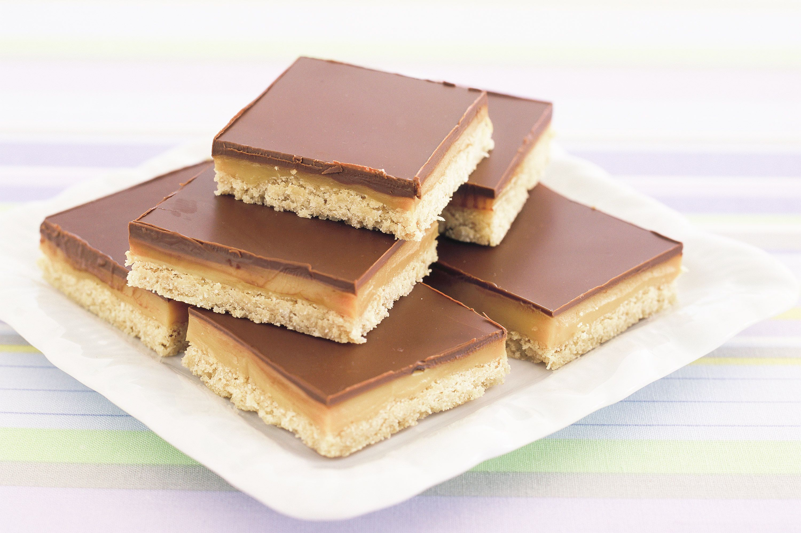

Caramel Slice

Description
This is a really yummy caramel slice that a kind colleague made for me during my early days as a new graduate. She kindly provided a few for me to take and store in the fridge
As I'm getting older I no longer indulge in desserts like these anymore.
Ingredients
Base
- 1 C plain flour, sifted
- ½ C brown sugar
- ½ C Coles Dessiccated Coconut
- 125g Coles Organic unsalted Butter, melted
Filling
- 395g can NESTLE Sweetened Condensed Milk
- 2 Tbsp golden syrup
- 60g Coles Organic Unsalted Butter, melted
Topping
- 125g cooking chocolate, chopped
- 60g copha, chopped
Steps
- Preheat oven to 180°C. Line a 3cm deep, 28 x 18cm (base) lamington pan.
- To make the base, combine flour, sugar, coconut and butter in a bowl. Mix well. Press into prepared lamington pan. Bake for 15 to 20 minutes, or until light golden. Remove from oven. Cool.
- To make the filling, combine condensed milk, golden syrup and butter in a saucepan over medium heat. Cook, whisking, for 8 minutes or until golden. Pour over cooked base. Bake for 12 minutes or until firm. Cool completely. Refrigerate for 3 to 4 hours, or until set.
- To make the topping, place chocolate and copha into a heat-proof bowl over a saucepan of simmering water. Stir until melted. Pour over caramel. Refrigerate to set. Cut into squares to serve.
Odin recipes